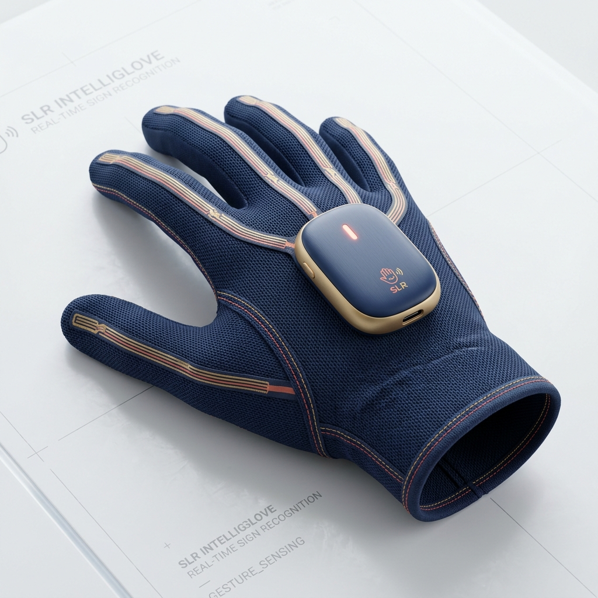
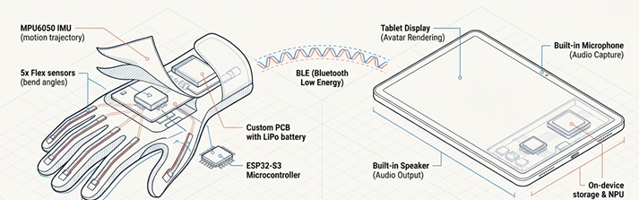

The Hardware — Coming Next
The AI brain you just tried is already live. This is the wearable it's built for.

Why a Glove, Not a Camera?
Wearable sensors completely bypass the severe lighting dependencies, background clutter issues, and privacy concerns inherent to camera-based sign language recognition. By directly measuring joint angles and motion trajectories, the glove works reliably in any environment, including low-light rural settings where traditional cameras fail.

This diagram illustrates the complete hardware ecosystem. The wearable glove acts as the primary input device, utilizing flex sensors and an IMU to capture the precise shape and motion of Indian Sign Language. This raw data is processed locally by the ESP32 microcontroller and transmitted via ultra-low-latency Bluetooth (BLE) to the companion tablet. The tablet then leverages its onboard NPU and storage to decode the signs, rendering an animated avatar on-screen and outputting spoken audio, while simultaneously listening for spoken replies through its built-in microphone.
Glove Component Architecture
5x Flex Sensors
Detects precise finger bend angles to capture the exact hand shape for each ISL sign (per hand).
MPU6050 IMU
An integrated accelerometer and gyroscope that captures real-time hand orientation and motion trajectory for dynamic signs.
ESP32-S3 Microcontroller
Runs on-device AI gesture-recognition inference locally and handles all high-speed Bluetooth communication.
Custom Glove PCB
A miniaturized board that seamlessly integrates all sensors, compute, and wiring directly into the glove fabric.
BLE Module
Bluetooth Low Energy provides a persistent, ultra-low-latency wireless link between the glove and the companion device.
LiPo Battery + TP4056
A 3.7V lithium-polymer battery coupled with a safe charging module guarantees portable, all-day power.
The Companion Device
The hardware ecosystem is completed by a paired Samsung tablet or smartphone. It acts as the local computing hub, utilizing its display for the animated ISL avatar, its microphone for speech input, and its speaker for audio output. It houses the secure on-device storage for offline AI translation models and cached voice packs, ensuring SamaVaad works perfectly without an internet connection.
From Glove to Conversation
Current Development Phase
SamaVaad is being built from the software out. The AI translation, grammar bridge, and avatar layers—the core intelligence you can try on our live demo—are functional today. The physical sensor glove outlined here represents the next critical build phase. By perfecting the complex linguistic translation engine first, we ensure the hardware will have a robust, fluent brain waiting for it on day one.